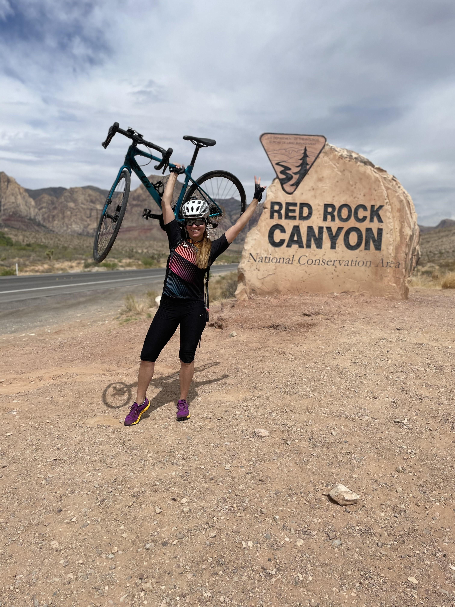
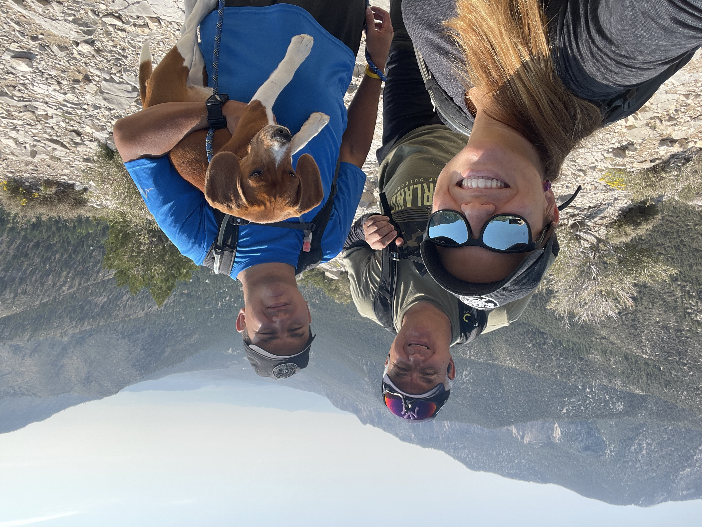
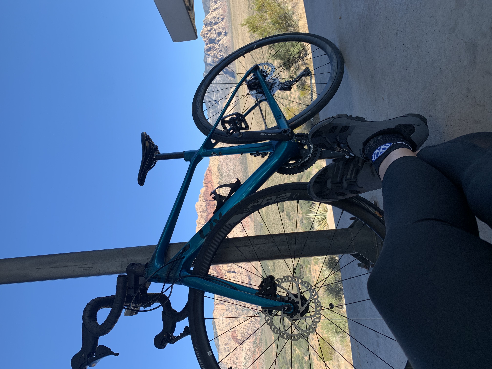

One of my favorite things to do when I am free is riding my bike. I love to go out and enjoy the nature. This makes me feel connected with it, and I love. Since I was little, I always had a bike, but I did not always like it. With the pass of the years, this has been my favorite activity to do with my family.
  